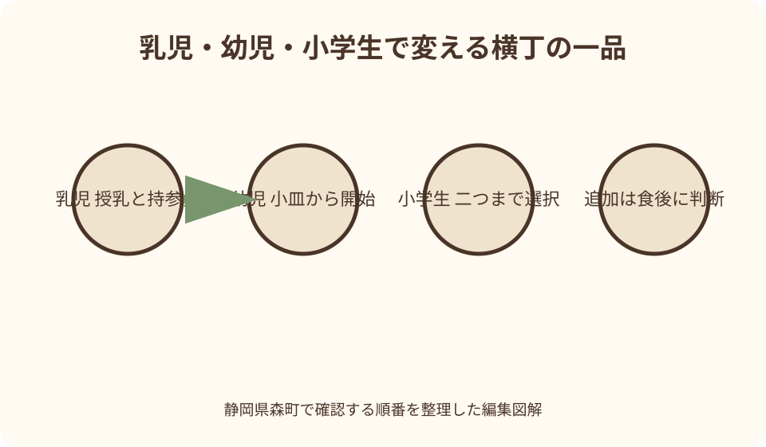
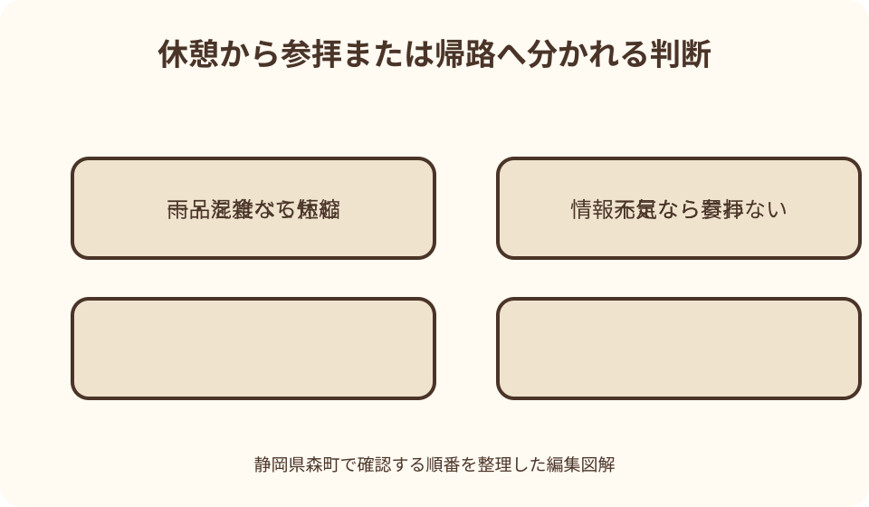

ことまち横丁・家族のお出かけ｜最終確認 2026-08-10
静岡県森町・ことまち横丁を子連れで楽しむ｜食事量と休憩から組む家族案内
ことまち横丁は、小國神社の門前で食事、甘味、茶、土産を選べる場所です。公式には複数の店と合計100席の休憩スペースが案内されています。ただし、席数は子ども椅子、授乳、ベビーカーの置き場、アレルギー対応を保証する数字ではありません。子連れでは、食べたい品を増やすより、到着後にトイレと席を確認し、年齢に合う少量から注文し、参拝を前後どちらかへ置く方が落ち着きます。本記事は公式掲載を基に、設備を現地確認しながら途中で帰れる一日を組みます。

最初に横丁でかなえたいことを一つ決める
子連れでことまち横丁へ行く日は、食事、甘味、茶の買い物、小國神社参拝を全部同じ重さで並べません。家族で主目的を一つ決めます。昼食が目的なら甘味は余力がある時、参拝が目的なら横丁は休憩と一品だけにします。
ことまち横丁公式には、森の茶本舗、茶寮宮川、宮川カフェ、ことまちカフェテリア、寺子屋本舗などが掲載されています。店名の多さは、子どもが全部回れることを意味しません。入口で営業中の店を見て、第一候補と代案を一つずつ選びます。
出発前には、子どもの年齢、普段の食事時刻、昼寝、トイレ間隔、苦手な食材を家族で共有します。現地で大人一人だけが知っている状態を避け、もう一人も薬、着替え、緊急連絡先の場所を分かるようにします。
滞在時間は、店を何軒回るかではなく、子どもが機嫌よく座れる長さから決めます。乳児の授乳や幼児の着替えが一回入れば、予定は簡単に伸びます。帰る時刻を先に決め、追加注文はその範囲で判断します。
本記事は筆者の家族が全店舗を利用した体験記ではありません。2026年8月10日に確認した各公式ページを基に、確認項目を整理しています。営業、商品、設備、交通は変わり得るため、訪問日の案内を優先してください。
横丁公式の店舗と休憩所を一周せず把握する
公式の休憩所ページは、合わせて100席の休憩スペースを案内しています。この数は横丁全体の目安として役立ちますが、訪問時の空席、予約、子ども椅子、屋内外の内訳までは同じページから確定できません。到着したら利用可能な席を目で確認します。
席を確保するために荷物だけを長時間置いたり、家族が別々の店へ並んで連絡不能になったりしません。大人一人が子どもと席候補で待ち、もう一人が注文条件を聞くなど、家族が見える範囲で役割を分けます。
食べ歩きの商品でも、子どもが歩きながら食べる計画にはしません。串、熱い容器、溶ける甘味は転倒時の危険があります。購入後に座れる場所を確認し、食べ終えてから次の店へ移ります。
店頭では、注文口、受取口、列の最後がそれぞれ違う場合があります。ベビーカーで列をふさがない位置を店員へ尋ね、家族全員で狭い列へ入る必要があるか確認します。呼出方法があれば聞き逃さない距離で待ちます。
横丁の所在地は小國神社と同じ一宮3956-1として公式に掲載されています。しかし、同じ住所だから駐車区画、横丁、参道が一枚の平坦な床でつながるとは限りません。現地図と案内表示を読み、最短距離より安全な通路を選びます。
乳児は食事より授乳・おむつ・昼寝を先に置く
乳児連れでは、大人が昼食を取る時刻より、授乳と昼寝が崩れにくい到着時刻を選びます。車やバスを降りた直後に授乳が必要なら、列へ並ぶ前に利用できる場所を確認します。授乳室が横丁内にあるとは断定しません。
小國神社の施設案内には参集殿の授乳室が掲載されていますが、横丁利用者がいつでも自由に使える、横丁の席からすぐ行けるとは読み替えません。利用時間、入口、参拝行事との重なりを、訪問前に神社へ確認します。
離乳食の持込み、温め、湯の提供、使用済み容器の処理は、店ごとに尋ねます。家庭用の食品だから席で当然に使えると考えず、衛生上の案内に従います。必要なら常温で安全に扱えるいつもの食事を準備します。
抱っこひもとベビーカーの両方を持つ場合、どちらを横丁で使うかを駐車場で決めます。荷物を積んだベビーカーを置いたまま離れず、段差や混雑で通りにくければ、無理に押し込まず抱っこへ切り替えます。
乳児の食事量を横丁の商品で満たす計画は立てません。大人の食事は交代で短く取り、泣き、眠気、暑さが強ければ未開封の土産だけ選んで帰ります。親が食べ切れない品は最初から注文数を減らします。
幼児は一人前を前提にせず小皿から始める
幼児は空腹でも、見慣れない場所では食べる量が変わります。一人一品を先に買わず、大人の食事を分けられるか店へ確認し、可能なら小皿で少量から始めます。取り分け不可の商品は無理に共有しません。
串に刺さった品は、大人が串を外し、座って食べられる状態にしてから渡します。焼きたて、揚げたて、温かい餡は外側が冷めても中が熱い場合があります。大人が温度を確かめ、急いで口へ運ばせません。
麺類や甘味は、子ども向けの量や味とは限りません。麺の長さ、たれの辛さ、茶を使った品の苦味、ナッツや乳などの材料を注文前に質問します。店名や見た目だけで幼児向けと判断しません。
子ども用椅子、ベルト、食器、エプロンは、公式休憩所の席数案内からは確認できません。必要な家庭は持参できる物を用意し、椅子への固定器具は店の許可と製品の使用条件に従います。
幼児が食べ終えたら、大人の買い物が終わるまで席で待たせ続けません。大人を交代し、短い散歩または帰路へ移ります。走り回り始めた時点を追加注文の合図ではなく、滞在終了の合図にします。
小学生は主食・甘味・土産から二つを選ぶ
小学生には、使える金額だけでなく、主食、甘味、その場で食べない土産の違いを説明します。三つを一度に選ばず、最初は二つまでにします。主食を食べ終えた後も空腹なら追加する順が、食べ残しを減らします。
自分で注文する場合も、列の直前で商品を決めます。後ろの人を待たせながら長く迷わせず、第一候補が売り切れなら代案を選ぶか、列を離れて考えます。会計方法と受取場所は大人も一緒に聞きます。
兄弟姉妹で同じ物を買う必要はありません。ただし、一人だけが食べられない材料を含む時は、席で交換が起きないよう容器を離します。誰の商品かを大人が把握し、食物アレルギーのある子の品を先に確定します。
茶や菓子を土産に選ぶなら、誰へ渡すか、帰宅まで持てるかを考えます。自分用の土産をその場で開けると食事量の管理が崩れるため、開封は帰宅後と決めて袋へ入れます。
小学生が余力を残していれば、商品名や森町の茶について公式説明を読む時間にできます。全部の店を回るスタンプ競争にはせず、一品を選んだ理由を家族で話す方が、短い滞在でも土地の記憶が残ります。

アレルギー質問は商品名ではなく材料と工程で行う
食物アレルギーがある家族は、公式写真や一般的なレシピで原材料を判断しません。注文前に商品名、対象のアレルゲン、たれやトッピング、製造場所、共用器具の有無を店員へ具体的に尋ねます。
「卵は入っていますか」だけで終えず、生地、衣、つなぎ、仕上げ、付け合わせまで確認します。店員が即答できない場合は、原材料表示や責任者に確認できるか聞き、情報が得られなければ購入しない判断をします。
同じ店の別商品が安全とは限りません。油、鉄板、トング、作業台を共有している可能性があります。微量混入を避ける必要がある人は、主治医から受けた指示を基準にし、現場の「たぶん大丈夫」を根拠にしません。
薬は駐車中の車へ置かず、保護者がすぐ取り出せる場所に持ちます。緊急時の対応を同行者全員で確認し、子ども本人にも交換してはいけない食べ物を年齢に合う言葉で伝えます。
確認に時間がかかり、子どもが疲れてきたら、食べられる品を無理に探し続けません。家庭から準備した安全な食事を許可された場所で取るか、未開封で表示を確認できる品だけを買い、食事は別の場所へ切り替えます。
トイレ・授乳・休憩は注文より先に現地確認する
駐車場またはバス停から着いたら、最初にお手洗いの位置を案内図で確認します。小國神社公式の施設一覧にはお手洗いが掲載されていますが、多目的設備、おむつ交換台、子ども用便座の有無までは必要に応じて問い合わせます。
授乳は、場所だけでなく利用できる時間、鍵、同伴者の待機位置を尋ねます。ミルク用の湯、洗浄設備、電子レンジがあると仮定しません。必要量の湯や保温容器は、家庭で安全に準備できる範囲を検討します。
休憩席が空いていても、ベビーカーを通路へはみ出させません。店員へ置き場所を聞き、盗難や転倒を防ぐため子どもと荷物から離れません。大きな荷物が多い日は、車へ安全に戻せる物を先に減らします。
おむつや食べ残しのごみは、店のごみ箱へ何でも捨てられるとは考えません。持帰り用の密閉袋を用意し、店舗の分別案内があれば従います。周囲の席でおむつ交換をしないことも基本です。
休憩は食後だけに置かず、注文前にも一度入れます。子どもの顔色、水分、服の濡れ、眠気を確かめてから並べば、購入後すぐ帰る事態を減らせます。異変があれば食事を始めず、静かな場所か帰路へ移ります。
ベビーカーは駐車区画から横丁まで区間で確認する
小國神社公式は複数の駐車場と門前までの徒歩目安を掲載し、無料駐車場約700台と案内しています。約700台は常に横丁の最寄りへ停められる意味ではありません。繁忙期には案内された区画へ入り、距離を現地で確かめます。
ベビーカー利用では、駐車位置から横丁入口、休憩席、注文口、お手洗いまでを分けて尋ねます。一部を通れることを全区間の段差なしと読み替えず、砂利、傾斜、濡れた路面、混雑を見て抱っこへ切り替えます。
車を降りる前に、ベビーカーを組み立てる安全な余地があるか確認します。走行車の側で子どもを待たせず、大人一人が周囲を見てから乗せます。荷物を先に積みすぎて後方へ倒れないよう、製品の積載条件を守ります。
横丁と参拝を続ける日は、食べ物や飲み物をベビーカーへ載せたまま長く歩きません。こぼれ、鳥や虫、日射の影響を避け、食事を終えて容器を片付けてから参道へ向かいます。
雨の日はベビーカーカバーだけで解決したと思わず、大人の視界、手荷物、子どもの暑さも見ます。傘で片手がふさがり、路面が滑り、列が混んでいれば、横丁だけまたは参拝だけに絞ります。
参拝前後は食べ物と子どもの疲れで順を決める
小國神社参拝を組み合わせるなら、子どもの空腹が強くなる前に参拝できるかを考えます。朝食を取れていて元気なら先に参拝し、横丁を休憩にします。空腹で落ち着かないなら、横丁で少量を食べて手を整えてから向かいます。
初宮詣や七五三など時刻を意識する参拝日は、注文待ちを前へ入れません。受付、祈祷、写真を優先し、横丁は終了後の代案にします。予約や受付条件は神社公式で最新情報を確認します。
食後すぐに宮川沿いまで長く歩く予定は置かず、まず休憩します。乳児の吐き戻し、幼児の眠気、小学生の疲れを見て、散策は省ける追加予定として扱います。川辺での行動は現地表示と神社の案内に従います。
参拝前に土産を多く買うと、荷物管理が増えます。常温品でも車内の熱や直射日光を避ける必要があるため、営業時間に間に合うなら買い物は帰る前へ回します。閉店時刻と受取時間は当日確認します。
参拝を終えた子どもが眠ったら、起こして甘味を食べさせる必要はありません。大人の希望は持帰り可能な品へ切り替え、食べる場所と保存条件を店へ聞きます。家族行事の成功を購入数で測らないことが大切です。
混雑・雨天・途中撤退の合図を家族で共有する
紅葉期、正月、七五三などは、神社公式が交通規制や駐車場の利用変更の可能性を案内しています。横丁だけを目当てにしても同じ周辺道路を使います。通常日の所要時間を繁忙日に当てはめず、帰路の余白を取ります。
列が長い時は、子どもを並ばせ続ける前に待ち方を尋ねます。呼出しや整理券がなければ、大人だけが並べるかを店へ確認します。家族全員が列に必要なら、子どもの状態によって購入をやめます。
雨が強まった時は、屋根の有無だけで滞在を続けません。服や靴の濡れ、気温、ベビーカーの視界、駐車場までの路面を見ます。温かい物を追加するより、乾いた状態で車やバスへ戻れる時点を選びます。
撤退の合図は、泣き止まない、走り始める、顔色が悪い、着替えを使い切る、アレルギー情報を確認できない、帰りの便が迫る、のように具体化します。一つでも安全に関わる合図が出たら予定を減らします。
途中で帰る時は、未受取の商品や会計の有無を大人同士で確認します。慌てて車へ戻り、注文品を放置しません。店へ事情を短く伝え、受取が難しければ可能な対応を尋ねますが、特別扱いを当然とは考えません。

良い点：食事・甘味・茶を一か所で選び直せる
ことまち横丁の良い点は、公式掲載上、食事、甘味、茶、土産の異なる候補が集まることです。子どもが主食を食べられない時に甘味で埋めるのではなく、別の軽食や密封品など役割を変えて探せます。
休憩スペースが公式に案内されていることも、子連れには判断材料です。ただし、空席を保証するものではないため、席が見つからなければ持帰りに変える条件で使います。席を取るために子どもだけを残しません。
小國神社と同じ所在地にあるため、参拝の前後に立ち寄る候補にできます。移動が短い可能性はあっても、子どもにとっての負担は駐車位置、混雑、天候で変わります。追加先として柔軟に外せることが利点です。
森町公式の観光入口から、町内の他の見どころや催しも確認できます。横丁が混雑していても、すぐ別施設へ移動するのではなく、営業、距離、子どもの体調を見て次回へ回せます。候補を知ることと、同日に詰め込むことを分けます。
茶や個包装の土産を選べれば、その場で全員が食べる必要はありません。子どもの食事が終わった時点で買い物を短くし、自宅で落ち着いて楽しむ形へ変えられます。保存とアレルゲン表示は商品ごとに確認します。
注文したい点：家族向け設備を区間別に示してほしい
公式案内に、各休憩所の屋内外、子ども椅子、ベビーカー置き場、おむつ交換、授乳の確認先がまとまると、出発前の迷いを減らせます。設備の有無だけでなく、利用時間と臨時変更の確認日があると実用的です。
駐車区画から横丁入口までについて、段差、傾斜、路面、雨天時に使える経路を区間ごとに示せると助かります。ベビーカー対応という一語ではなく、どこで抱っこへ切り替えるか判断できる写真と案内が望まれます。
各店舗には、主要なアレルゲン表示に加え、注文時に誰へ何を尋ねるかが分かる案内があると安心です。材料変更や共用器具を含め、当日確認が必要な範囲を明確にすれば、店員と家族の双方が短く正確に話せます。
混雑時には、列、受取、休憩席の使い方を入口で確認できると、ベビーカーや子どもが通路へ集中するのを避けられます。実際の待ち時間を保証しなくても、整理券や呼出しの有無、家族が待てる場所を当日掲示できます。
公共交通利用者向けには、停留所から横丁までの歩行環境、帰りの確認方法、ベビーカーや大きな荷物を持つ時の問い合わせ先が一つにまとまると便利です。時刻は変わるため、固定表示より運行元へのリンクを優先したいところです。
代案・結論：一品と一休憩で完了する予定にする
前日には、横丁の公式営業案内、小國神社の施設とアクセス、森町の公共交通入口を確認します。子どもの食事、薬、着替え、雨具を一つにまとめ、主目的と撤退の合図を同行する大人全員へ伝えます。
到着後は、お手洗い、授乳の確認先、休憩席、注文列の順に見ます。店を全部見てから決める必要はありません。子どもが食べられる第一候補と、表示を確認しやすい密封品の代案が決まれば十分です。
注文は、年齢に合う一品または家族で無理なく食べ切れる数から始めます。乳児は持参食の可否、幼児は温度と小皿、小学生は食べ切ってから追加を基準にします。アレルギーの確認が取れなければ購入しません。
参拝は食事の前後どちらか一方へ置き、宮川散策や追加の甘味は余力がある場合だけにします。雨、混雑、眠気が出たら追加を外し、未開封土産も買わずに帰る選択を残します。
結論は、ことまち横丁を子ども向け施設と決めつけるのではなく、家族が確認しながら使える門前の立寄り先と捉えることです。一品を食べ、一度休み、安全に駐車場か停留所へ戻れれば、その日の予定は完了です。
大石の視点：家族の記録は食べた数より確認の順を残す
私（大石）は、子連れのお出かけでは、予定を達成した数より、誰がどこで休めたかを大切にします。横丁の名物を全部買わなくても、子どもが無理なく参拝や食事を終えれば、家族にとって十分な一日です。
帰宅後は、停めた駐車区画、横丁までの路面、利用できた休憩席、トイレと授乳の確認先、子どもが食べ切れた量を短く残します。次回はその記録を出発前に見直し、成長した年齢に合わせて更新します。
アレルギーがある家庭は、食べられた商品名だけを残さず、確認日、原材料表示、店へ尋ねた内容も記録します。同じ名前の商品でも材料や工程が変わる可能性があるため、次回も当日の表示を確認する注記を付けます。
三世代で行くなら、運転、子どもの見守り、荷物、注文を一人へ集めません。足元に不安のある家族と乳児の両方がいる日は、最も休憩が必要な人に全体を合わせ、横丁か参拝のどちらかを次回へ分けます。
この記事の確認日は2026年8月10日です。横丁の営業、商品、座席、設備、小國神社の駐車場、公共交通は変更される場合があります。出発前に公式情報を読み、当日は現地表示と職員の案内を優先し、確認できない設備へ依存しない予定で訪れてください。
公式情報・確認先
掲載内容は次の一次情報を基礎に整理しました。営業、料金、催し、交通は変わるため、出発前または手続き前にリンク先で最新情報を確認してください。